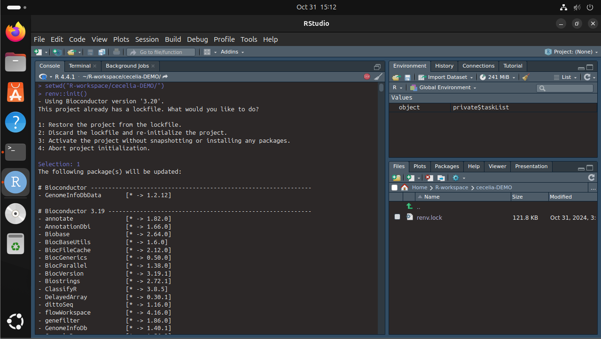
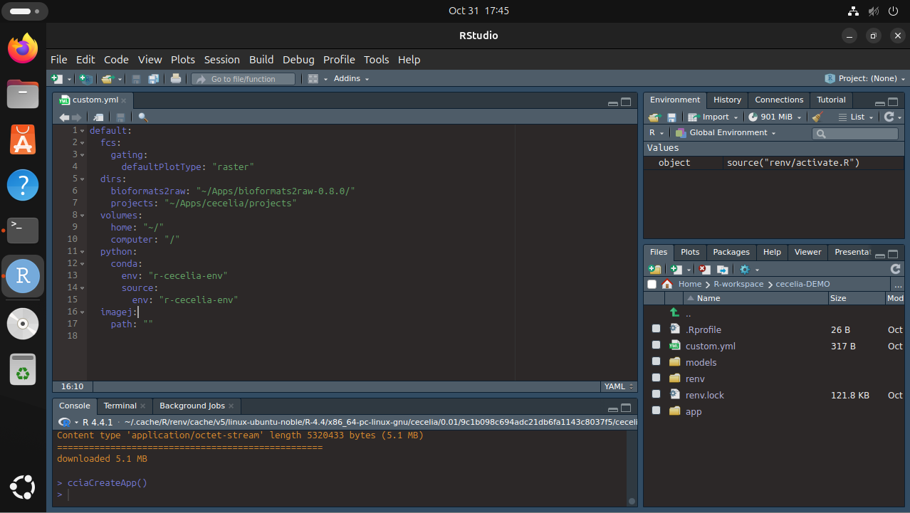

Linux installation¶
Step by step guide¶
Installation should take less than 1 h. Most time will be spent compiling R and python packages. Most R packages will have to be compiled on Linux systems.
Install library dependencies. We have tested this on Ubuntu 24.04.1 LTS. The package list might therefore vary depending on your distribution.
{kind=link}
Install R base for Ubuntu and RStudio. We tested this on R version 4.4.1. If you use another version of R the package dependencies might not be resolved during renv::init().
Start RStudio and install renv.
{kind=link}
Install package dependencies. Download the renv.lock file and create the R-environment. You must set the current working directory to the directory where the renv.lock file is located. Select “1” to restore the project from the lockfile.
Tip
Unix systems have three main signs to specify directories
Common path directories¶~ defines the home directory . defines the current directory .. defines the parent directory ~/Documents is shortform for /home/dom/DocumentsInit R-environment¶# An example would be # setwd("~/Cecelia") setwd("PATH/TO/RENV/LOCK/FILE") renv::init()
{kind=link}
Load the environment you have just created and install Cecelia package.
{kind=link}
You must define a base directory where configuration files, models and the shiny app will be stored.
{kind=link}
Cecelia depends on a conda environment which must be created.
{kind=link}
{kind=link}
Download models for deep-learning segmentation, tracking and others.
{kind=link}
Create shiny app in base directory.
{kind=link}
Adjust config
You have to adjust the parameters in
/YOUR/PATH/TO/cecelia/custom.ymlto your system and download/install:Adjust config in text editor of RStudio¶default: dirs: bioformats2raw: "/REPLACE/PATH/TO/bioformats2raw" projects: "/REPLACE/PATH/TO/project/directory/" volumes: home: "~/" computer: "/" python: conda: env: "r-cecelia-env" source: env: "r-cecelia-env"
{kind=link}
Run the app.
{kind=link}